In diesem Kapitel erarbeitest du Magnetfelder von Permanentmagneten und Strömen, die Lorentzkraft und die magnetische Flussdichte. Du siehst immer wieder, was Basisfachwissen ist und was in die zusätzliche Leistungsfach-Zeit gehört.
Die Leitfrage lautet: Wie kann ein Magnetfeld Kräfte ausüben, obwohl du es nicht direkt sehen kannst?
Du arbeitest hier nicht nur Definitionen ab. Du lernst, aus Feldlinien auf Kräfte zu schließen, Handregeln sicher anzuwenden, Messdaten in Formeln zu übersetzen und zu entscheiden, wann ein Modell idealisiert ist. Genau diese Übergänge sind in Aufgaben meist entscheidend.
Du startest mit Magneten, Feldlinien und Spulen. Ziel: Du kannst beschreiben, wo das Feld stark ist und welche Richtung es hat.
Danach kommen Leiterkraft und Lorentzkraft. Ziel: Du kannst vorhersagen, wohin ein Leiter oder Teilchen abgelenkt wird.
Mit \(B\), \(F=BIs\), \(F_L=qvB\) und der Spulenformel berechnest du Magnetfelder und Kräfte.
Im Leistungsfach nutzt du dieselben Ideen für Hallsonde, Fadenstrahlrohr, Massenspektrometer, Zyklotron und Schraubenbahnen.
Magnete, Magnetfelder, Feldlinien, stromdurchflossene Leiter, Spulenfelder, magnetische Flussdichte \(B\) und die Kraft \(F=B\cdot I\cdot s\) gehören zum gemeinsamen Kern.
Die Lorentzkraft auf einzelne Ladungen \(F_\mathrm L=q\cdot v\cdot B\), Hall-Effekt, quantitative Kreisbahnen, Schraubenbahnen und kombinierte elektrische und magnetische Felder sind Vertiefungen für das Leistungsfach.
Die Eigenschaften von Magneten, Feldlinienbilder und das Elementarmagnetmodell sind Grundlagen für beide Kursarten.
Magnete erkennst du daran, dass sie magnetisierbare Stoffe wie Eisen, Nickel und Kobalt anziehen. Auf nicht magnetisierbare Stoffe üben Magnete keine nennenswerte magnetische Kraft aus. Die stärkste Wirkung findest du an den Polen.
Hängt man einen Stabmagneten frei drehbar auf, richtet er sich in Nord-Süd-Richtung aus. Der Pol, der zur geografischen Nordrichtung zeigt, heißt Nordpol; der andere heißt Südpol. Kleine drehbar gelagerte Stabmagnete sind Kompassnadeln.
Ungleichnamige Pole ziehen sich an, gleichnamige Pole stoßen sich ab. Anders als elektrische Ladungen treten magnetische Pole nicht einzeln auf: Ein Magnet ist immer ein Dipol.
Ein häufiger Denkfehler ist die Vorstellung, ein Nordpol sei so etwas wie eine positive elektrische Ladung und ein Südpol wie eine negative Ladung. Die Analogie hilft nur begrenzt: Elektrische Ladungen können getrennt auftreten, magnetische Pole nach heutigem Wissen nicht. Wenn du einen Magneten teilst, trennst du nicht Nord und Süd, sondern erzeugst zwei kleinere Dipole.
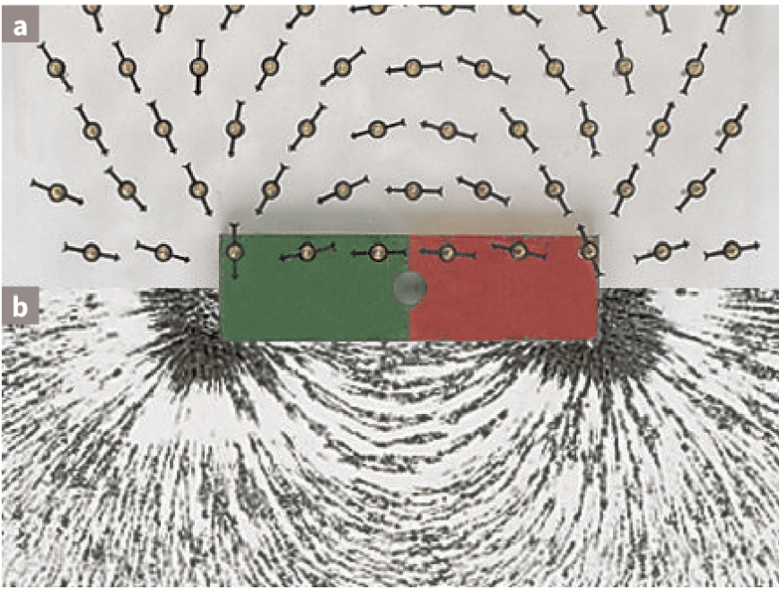
Die Kompassnadeln richten sich entlang der Feldlinien aus. Die Richtung der Feldlinie ist so definiert, wie der Nordpol einer Kompassnadel zeigt. Außerhalb eines Stabmagneten verlaufen die Feldlinien vom Nordpol zum Südpol.
Teilst du einen Stabmagneten, entstehen nicht einzelne Nord- oder Südpole, sondern zwei neue Dipole.
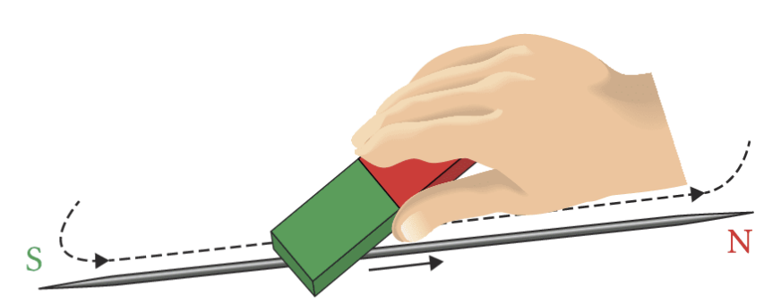
Das Elementarmagnetmodell erklärt, warum ein Stück Eisen magnetisiert werden kann. In unmagnetisiertem Eisen sind viele kleine magnetische Dipole ungeordnet. Beim Magnetisieren werden sie ausgerichtet. Dabei werden keine magnetischen Teilchen übertragen; die Dipole werden nur geordnet.
Dieses Modell ist besonders nützlich, wenn du später Elektromagnete und Eisenkerne verstehst: Ein äußeres Magnetfeld kann die kleinen Dipole im Material teilweise ordnen. Dadurch verstärkt das Material das Magnetfeld der Spule.
Magnete sind stets Dipole mit Nordpol und Südpol. Magnetisieren bedeutet: magnetische Dipole werden ausgerichtet.
Erkläre in eigenen Worten: Warum wird eine Stahlnadel durch Überstreichen mit einem Magneten selbst magnetisch, obwohl keine „magnetische Ladung“ übertragen wird?
Feldlinienbilder von Magneten, Leitern und Spulen sowie die Richtung mit der Faustregel gehören zum gemeinsamen Kern.
Ein Magnet ist von einem Magnetfeld umgeben. In diesem Feld werden andere magnetische Dipole ausgerichtet und es wirken Kräfte. Sichtbar machen kannst du das Feld mit Kompassnadeln oder Eisenfeilspänen. Feldlinien sind ein Modell: Sie zeigen Richtung und Struktur des Feldes.
Dort, wo Feldlinien geradlinig und parallel verlaufen, nennt man das Feld homogen. Ein solches Feld liegt näherungsweise zwischen den Polen eines Hufeisenmagneten und im Inneren einer langen Spule vor.
Feldlinien sind keine echten Fäden im Raum. Sie sind eine Zeichensprache: Die Richtung zeigt, wie sich ein Nordpol ausrichten würde. Die Dichte der Linien zeigt qualitativ, wo das Feld stärker ist. Wenn du Feldlinienbilder vergleichst, achte deshalb immer auf zwei Dinge: Richtung und Dichte.
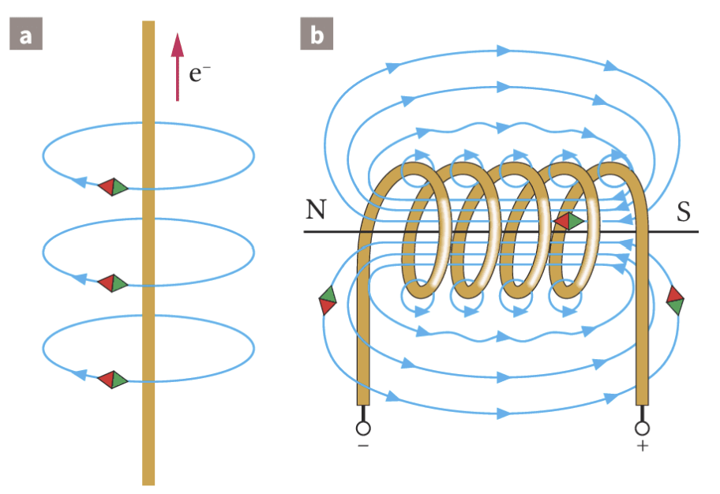
Ein stromdurchflossener gerader Draht erzeugt ein Magnetfeld mit geschlossenen kreisförmigen Feldlinien um den Draht. Eine stromführende Spule besitzt ein Feld, das außen dem Feld eines Stabmagneten ähnelt. Innen ist es bei einer langen Spule näherungsweise homogen.
Der wichtige Unterschied zum elektrischen Feld: Magnetische Feldlinien beginnen und enden nicht an einzelnen Polen. Sie sind immer geschlossen. Beim Stabmagneten sieht man außen nur den Teil vom Nordpol zum Südpol; im Magneten laufen die Feldlinien zurück.
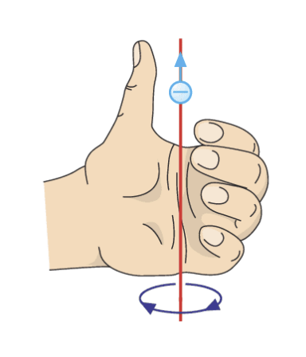
Bei der hier verwendeten Linke-Faust-Regel zeigt der Daumen in Richtung der Elektronenbewegung, also von Minus nach Plus. Die gekrümmten Finger zeigen die Richtung der magnetischen Feldlinien um den Leiter.
Merke dir dabei: Viele Schulbücher nutzen die technische Stromrichtung und dann die rechte Hand. Diese Seite arbeitet bei Leitern konsequent mit der Elektronenbewegung und der linken Hand. Entscheidend ist, dass du die gewählte Konvention nicht mischst.
Stromdurchflossene Leiter sind von Magnetfeldern mit geschlossenen Feldlinien umgeben. Eine stromführende Spule wirkt nach außen wie ein Stabmagnet; im Inneren einer langen Spule ist das Feld homogen.
Die Kraft auf stromdurchflossene Leiter im Magnetfeld, ihre Richtungsbestimmung und die qualitative Abhängigkeit von Stromstärke und Orientierung gehören zum gemeinsamen Kern.
Ein stromführender unmagnetischer Leiter wird im Magnetfeld abgelenkt. Je größer die Stromstärke ist, desto stärker ist die Auslenkung. Dreht man den Leiter so, dass er nicht mehr senkrecht zu den Feldlinien steht, wird die Kraft kleiner. Ist der Leiter parallel zu den Feldlinien, wirkt keine magnetische Kraft.
Die Leiterschaukel ist deshalb ein Schlüsselfall: Sie zeigt, dass Strom und Magnetfeld nicht nur nebeneinander existieren. Sobald sich Ladungsträger im Leiter bewegen und ein äußeres Magnetfeld vorhanden ist, kann eine messbare Kraft auf den Leiter entstehen.
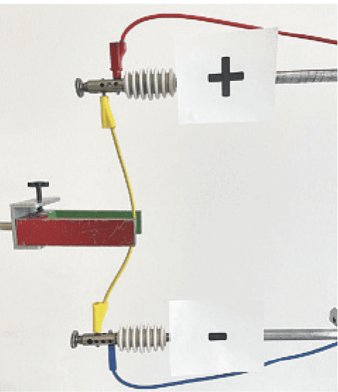
Der Leiter selbst ist nicht magnetisiert. Die Kraft entsteht, weil sich im Leiter Elektronen bewegen. Ihre einzelnen Lorentzkräfte ergeben zusammen die Kraft auf den Leiter.
Die Kraft ist maximal, wenn Leiter und Magnetfeld senkrecht zueinander stehen.
Wenn du eine Richtung vorhersagen sollst, kläre zuerst drei Richtungen: Elektronenbewegung im Leiter, Richtung des äußeren Magnetfelds und gesuchte Kraft. Zeichne sie lieber in eine kleine Skizze, bevor du die Handregel anwendest.
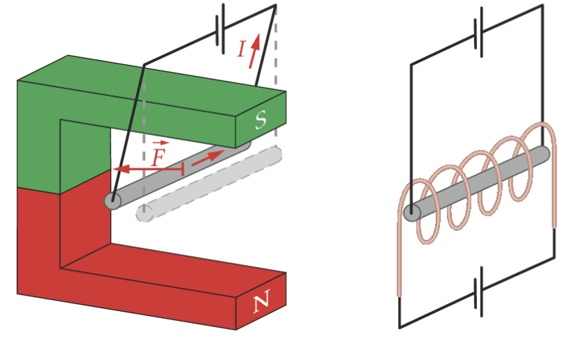
Die Leiterschaukel zeigt die Lageabhängigkeit besonders klar: Im homogenen Feld des Hufeisenmagneten wird der stromführende Leiter je nach Stromrichtung hinein- oder herausgedrückt. Hängt der Leiter parallel zu den Feldlinien einer Spule, wird er nicht abgelenkt.
1. Markiere die Richtung der Elektronenbewegung. 2. Markiere die Feldrichtung von Nord nach Süd. 3. Prüfe, ob Leiter und Feld parallel oder senkrecht stehen. 4. Nutze die Drei-Finger-Regel für die Kraftrichtung.
Auf einen stromführenden Leiter, der nicht parallel zu den Feldlinien eines äußeren Magnetfelds steht, wirkt eine Kraft. Sie ist maximal bei orthogonaler Ausrichtung.
Die Richtung der Lorentzkraft, die Drei-Finger-Regel und der Zusammenhang \(F_\mathrm L=qvB\) für bewegte einzelne Ladungen gehören nach dem Bildungsplan 2016 zum Leistungsfach. Im Basisfach bleibt die Kraft auf den stromdurchflossenen Leiter mit \(F=BIs\) verbindlich.
Wenn Strom durch einen Leiter fließt, bewegen sich darin Elektronen. Freie bewegte Elektronen, zum Beispiel in einer braunschen Röhre, werden ebenfalls im Magnetfeld abgelenkt. Die Kraft heißt Lorentzkraft. Sie wirkt senkrecht zur Bewegungsrichtung und senkrecht zur Magnetfeldrichtung.
Für negative Teilchen verwendest du die linke Hand, für positive Teilchen die rechte Hand. Der Daumen zeigt in Bewegungsrichtung der Ladung, der Zeigefinger in Richtung des Magnetfelds, der Mittelfinger zeigt die Richtung der Kraft.
Die Lorentzkraft ist für viele Lernende ungewohnt, weil sie nicht in Bewegungsrichtung wirkt. Eine Kraft in Bewegungsrichtung würde ein Teilchen schneller oder langsamer machen. Die magnetische Lorentzkraft steht aber seitlich zur Bewegung. Sie biegt die Bahn, ohne im idealen homogenen Magnetfeld direkt die Geschwindigkeit zu vergrößern.
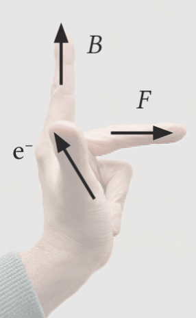
\(F_\mathrm L=|q|\cdot v_s\cdot B\)
Nur die Geschwindigkeitskomponente \(v_s\) senkrecht zum Magnetfeld trägt zur Lorentzkraft bei. Ruhende Ladungen und Teilchen, die parallel zu den Feldlinien fliegen, erfahren keine magnetische Kraft.
Fliegt ein Teilchen schräg zum Magnetfeld, zerlegst du \(v\) in \(v_s\) senkrecht und \(v_p\) parallel zum Feld. \(v_s\) sorgt für Krümmung, \(v_p\) läuft ungestört weiter.
Die Lorentzkraft kann die Bewegungsrichtung ändern, im reinen Magnetfeld aber nicht direkt den Betrag der Geschwindigkeit erhöhen.
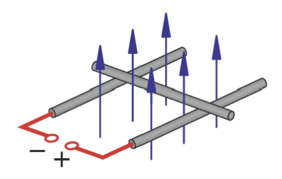
Fließt Strom durch den beweglichen Kohlestab, bewegen sich Ladungsträger im äußeren Magnetfeld. Auf sie wirkt die Lorentzkraft. Weil die Ladungsträger im Leiter an das Material gekoppelt sind, wird der ganze Stab mitgenommen.
Die Definition der magnetischen Flussdichte über die Kraft auf einen stromdurchflossenen Leiter und einfache Rechnungen gehören zum gemeinsamen Kern.
Um Magnetfelder zu vergleichen, braucht man eine Messgröße für die Feldstärke. Dafür eignet sich die Kraft auf einen Probestrom: Ein Drahtrahmen wird so in ein homogenes Magnetfeld gebracht, dass ein Leiterstück senkrecht zu den Feldlinien steht. Die Kraft auf dieses wirksame Leiterstück wird gemessen.
Das Vorgehen ähnelt der Einführung der elektrischen Feldstärke: Dort testet man ein elektrisches Feld mit einer Probeladung. Hier testet man ein Magnetfeld mit einem Probestrom, weil einzelne Magnetpole nicht verfügbar sind und kleine Permanentmagnete selbst komplizierte Felder mitbringen würden.
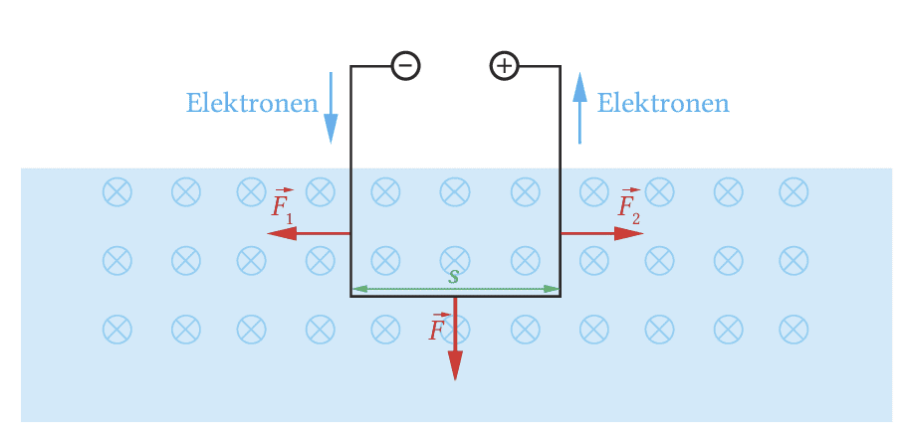
Für jedes Magnetfeld ist der Quotient aus Kraft, Stromstärke und wirksamer Leiterlänge konstant. Je größer dieser Quotient ist, desto stärker ist das Magnetfeld.
\(B=\frac{F}{I\cdot s}\)
\(B\) heißt magnetische Flussdichte. Ihre Einheit ist \(1\,\mathrm T=1\,\mathrm{N/(A\,m)}\).
\(F=B\cdot I\cdot s\)
Damit berechnest du die Kraft auf einen stromdurchflossenen Leiter, der senkrecht zu den Feldlinien steht.
Setze \(I\) immer in Ampere und \(s\) in Meter ein. Millinewton, Zentimeter und Millitesla müssen vor dem Einsetzen umgerechnet werden.
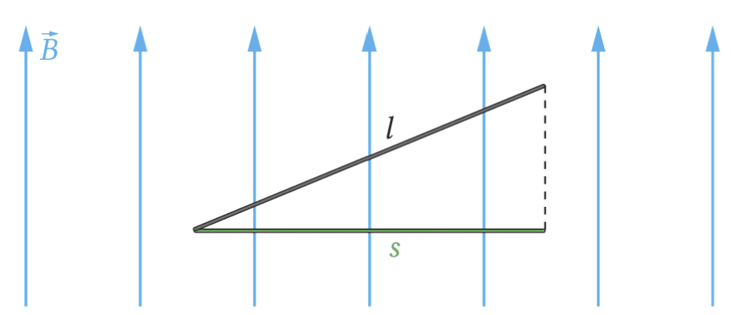
Dreht man den Drahtrahmen, nimmt die Kraft ab, weil die wirksame Leiterlänge kleiner wird. Steht der Leiter parallel zu den Feldlinien, ist die wirksame Leiterlänge null und damit auch die Kraft.
Ein Drahtrahmen hat \(s=5\,\mathrm{cm}\). Bei \(I=1\,\mathrm A\) wirkt die Kraft \(F=2\,\mathrm{mN}\).
Dann gilt \(B=\frac{2\,\mathrm{mN}}{1\,\mathrm A\cdot0{,}05\,\mathrm m}=0{,}04\,\mathrm T=40\,\mathrm{mT}\). Bei \(I=2{,}5\,\mathrm A\) folgt \(F=BIs=5\,\mathrm{mN}\). Soll die Kraft wieder \(2\,\mathrm{mN}\) betragen, muss die wirksame Leiterlänge auf \(s=2\,\mathrm{cm}\) sinken.
Warum wäre \(s=5\) statt \(s=0{,}05\,\mathrm m\) in der Rechnung ein Fehler? Schreibe kurz auf, wie sich das Ergebnis dadurch verändern würde.
Die Formel \(F_\mathrm L=e\cdot v_s\cdot B\), Rechnungen mit bewegten einzelnen Ladungen und die Herleitung aus der Leiterkraft gehören zum Leistungsfach.
Die Kraft auf einen Leiter lässt sich als Summe vieler Lorentzkräfte auf bewegte Elektronen deuten. Wenn in der Zeit \(\Delta t\) die Ladungsmenge \(\Delta Q=N\cdot e\) durch einen Leiterquerschnitt fließt, gilt \(I=\Delta Q/\Delta t\). Setzt man dies in \(F=BIs\) ein, erhält man für ein einzelnes Elektron bei senkrechter Bewegung die Lorentzkraft.
Für Aufgaben reicht oft die fertige Formel. Wichtig ist aber die Deutung: Ein Magnetfeld „zieht“ nicht einfach an Ladung. Es wirkt auf bewegte Ladung, und zwar abhängig davon, wie stark die Bewegung quer zum Feld ist.
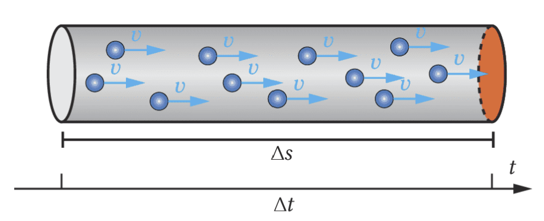
\(F_\mathrm L=e\cdot v_s\cdot B\)
Für ein beliebiges Teilchen nutzt du \(F_\mathrm L=|q|\cdot v_s\cdot B\). Die Richtung bestimmst du mit der Drei-Finger-Regel.
Nur die senkrechte Geschwindigkeitskomponente \(v_s\) zählt. Eine parallele Komponente bleibt vom Magnetfeld unbeeinflusst.
1. Kläre, ob \(v\) senkrecht zum Feld ist. 2. Falls nicht, bestimme \(v_s\). 3. Rechne \(F_L=|q|v_sB\). 4. Bestimme die Richtung getrennt mit der Handregel.
Der Hall-Effekt, die Hallspannung und die Hallkonstante sind Leistungsfachstoff. Im Basisfach reicht die Idee: Magnetfelder können mit Sensoren gemessen werden.
Eine Hallsonde ersetzt eine aufwendige Kraftmessung durch eine Spannungsmessung. In einem stromdurchflossenen Leiterplättchen bewegen sich Elektronen. Durch ein senkrechtes Magnetfeld werden sie seitlich abgelenkt. Dadurch entsteht eine Ladungstrennung und quer zum Strom eine messbare Hallspannung.
Die Ladungstrennung wächst so lange, bis die elektrische Kraft der Lorentzkraft entgegenwirkt. Im Gleichgewicht fliegen die Elektronen wieder geradlinig weiter.
Das ist ein typischer Rückkopplungsprozess: Zuerst trennt die Lorentzkraft Ladungen. Durch die getrennten Ladungen entsteht ein elektrisches Feld. Dieses elektrische Feld wirkt der weiteren Trennung entgegen. Sobald beide Kräfte gleich groß sind, bleibt eine konstante Hallspannung messbar.
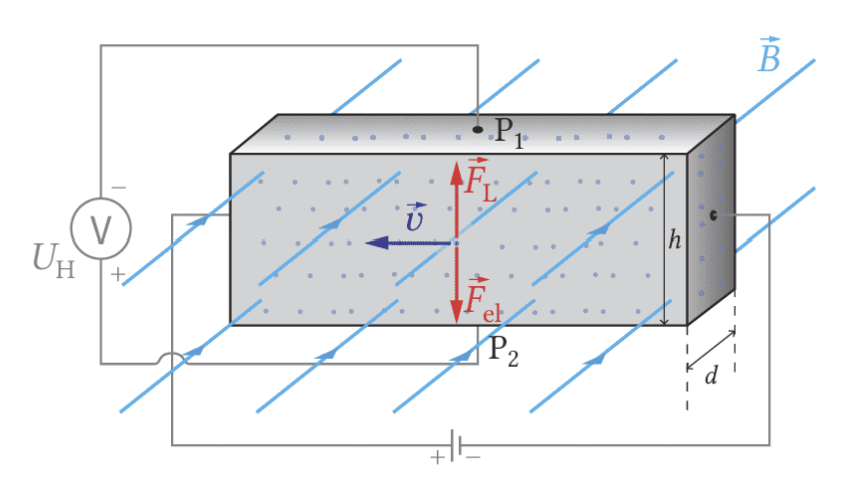
\(F_\mathrm{el}=F_\mathrm L\)
Im Gleichgewicht gilt \(e\cdot E=e\cdot v\cdot B\).
\(U_H=B\cdot v\cdot h\)
Bei fester Hallsonde ist die Hallspannung proportional zur magnetischen Flussdichte.
\(U_H=R_H\frac{I}{d}B\), \(\quad R_H=\frac1{n\cdot e}\)
Die Hallkonstante hängt vom Material ab. Halbleiter liefern deutlich größere Hallspannungen als Metalle.
Metalle haben sehr viele freie Ladungsträger. Dadurch ist die Driftgeschwindigkeit klein und die Hallspannung oft winzig. Halbleiter können eine deutlich größere messbare Hallspannung liefern.
Die schlanke Spule und die Formel \(B=\mu_0\mu_r\frac nl I\) sind im Basisfach und Leistungsfach vorgesehen. Im Leistungsfach wird die Herleitung und Auswertung meist gründlicher behandelt.
Stromdurchflossene Spulen werden überall dort eingesetzt, wo man Magnetfelder gezielt erzeugen möchte. Für das Grundverständnis betrachtet man zuerst eine lange, luftgefüllte Spule. In ihrem Inneren verlaufen die Feldlinien parallel zur Spulenachse; die magnetische Flussdichte ist dort näherungsweise konstant. Das Feld ist also homogen.
Mit einer Hallsonde findet man: Bei fester Spulenlänge ist \(B\) proportional zur Stromstärke \(I\). Bei fester Windungszahl und gleicher Stromstärke ist \(B\) antiproportional zur Spulenlänge \(l\). Außerdem hängt \(B\) von der Windungszahldichte \(n/l\) ab.
Anschaulich bedeutet das: Jede Windung trägt zum Magnetfeld bei. Packst du mehr Windungen auf dieselbe Länge oder erhöhst du den Strom, wird das Feld stärker. Ziehst du dieselbe Windungszahl auf eine größere Länge auseinander, verteilt sich die Wirkung stärker und \(B\) wird kleiner.
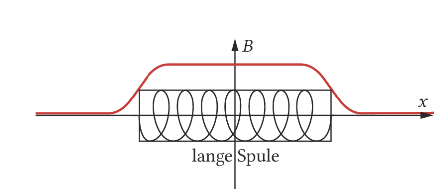
\(B=\mu_0\frac nl I\)
Für eine luftgefüllte schlanke Spule ist \(n\) die Windungszahl, \(l\) die Spulenlänge und \(I\) die Stromstärke.
\(\mu_0=1{,}257\cdot10^{-6}\,\mathrm{\frac{Vs}{Am}}\)
\(\mu_0\) heißt magnetische Feldkonstante. In Luft ist der Wert praktisch gleich dem Vakuumwert.
Aus Messwerten erhält man zum Beispiel \(\mu_0=\frac{B\cdot l}{n\cdot I}\). Die magnetische Feldkonstante ist eine Naturkonstante und steht über die Maxwell-Gleichungen mit \(\varepsilon_0\) und der Lichtgeschwindigkeit in Beziehung.
Je größer \(I\), desto größer \(B\). Je größer \(n/l\), desto größer \(B\). Je größer \(\mu_r\), desto stärker wird das Feld durch das Material im Inneren der Spule verstärkt.
Im zweiten Teil arbeitest du mit Spulenarten, Erdmagnetfeld, Kreisbahnen, Massenspektrometer, Zyklotron, Anwendungen und Simulationen weiter.